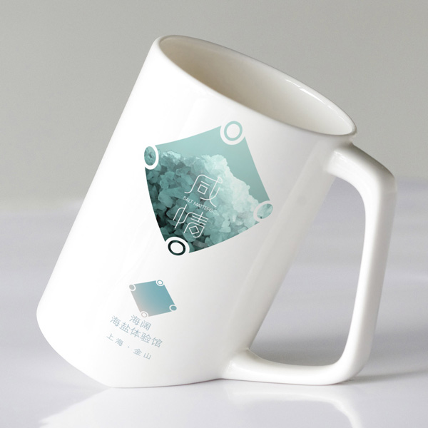

Xianqing 咸情
Basic Info
Type: Product service system
Tool: AI / PS / AE / PSSD tools
Team member: 1
Work in charge: Concept / PSSD system / Visual identity / APP & touchpoint mockup
Requirement & Purpose
XIANQING is a service system for the new HAIKUO Salt museum in Jinshan District, Shanghai. The service consisted of the basic functional service modules like ticket booking, an online platform for equal communication and knowledge sharing among the museum visitors, a virtual collecting game based on the display of the museum to form cross-media narrative and an information pushing channel to promote the consumption in the museum food bar and souvenir shop.
Xianqing APP on device
Xianqing introduction

Persona of user groups
Stakeholders of Xianqing

Offering map of Xianqing
System map of Xianqing
Storyboard of Xianqing
Touchpoint map of Xianqing
Service blueprint of Xianqing
Xianqing poster
Xianqing brochure

Xianqing souvenir
APP structure of Xianqing
Xianqing APP on phone
Xianqing APP on pad